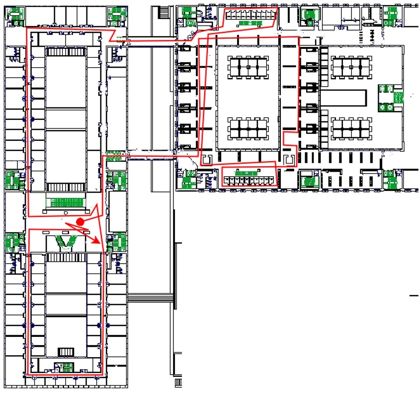
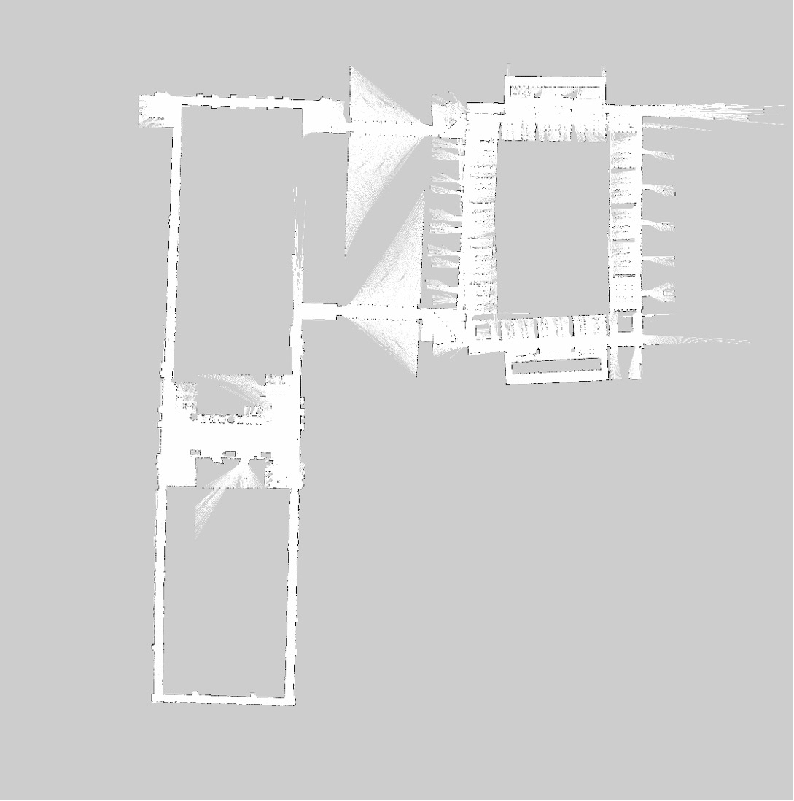

2D SLAM with Gmapping
Simultaneous Localization and Mapping using Rao-Blackwellized Particle Filters
Overview
This project focused on implementing and evaluating a 2D SLAM pipeline using the gmapping algorithm to enable a mobile robot to localize itself while constructing an occupancy grid map of an unknown environment.
The objective was to gain a deeper understanding of probabilistic localization, particle filter–based SLAM, and the effects of sensor noise and motion uncertainty on map quality and pose estimation.
Technical Approach
- Implemented 2D SLAM using ROS and the gmapping package
- Integrated 2D LiDAR, wheel odometry, and laser scanner data for pose estimation
- Tuned particle count, motion model parameters, and sensor update rates
- Analyzed map drift, loop closure, and global alignment to evaluate mapping accuracy
Results & Observations
- Generated consistent occupancy grid maps in structured indoor environments
- Observed tradeoffs between particle count, computational load, and map fidelity
- Identified failure modes related to wheel slip and rapid rotational motion
Visuals


Tools & Skills
Tools: ROS, RViz, gmapping, Ubuntu Linux
Skills: Probabilistic robotics, SLAM, localization, sensor fusion
Implementation & Analysis
This was an individual project in which I was responsible for the complete system setup, algorithm implementation, parameter tuning, and performance evaluation. I analyzed the impact of sensor noise, motion uncertainty, and particle filter configuration on localization accuracy and map quality, and iteratively refined the system based on experimental observations.